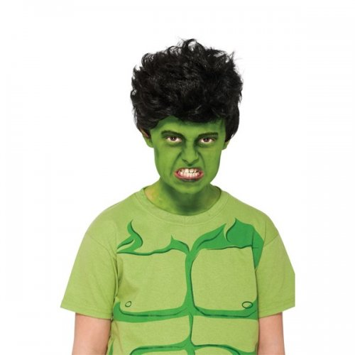

I used to think there was a real me.
There was also a public-Judy who smiled when she didn’t want to, said yes when she meant no, and pretended she was confidant or unafraid or daring.
Yeah that wasn't it.
The fake me covered up the real and spend lots of time and money polishing the presentation.
Secrets, lies, money spent on therapy, retreats, lipstick for the pig...
She had to be packaged, managed and controlled, especially if others were going to buy into her.
Because Real Judy was not presentable.
So she was hidden away- angry, unhappy, weak, and trying hard to never be seen.
Although suddenly sometimes she would burst out of hiding and her restraints anyway- angry, sad, afraid, unkind and Not As She Should Be.
Yeah Real Me was not pretty.
She was a lot like the Incredible Hulk actually. She needed to be kept secret.
Was that hidden Judy the real authentic one?
For that matter which was the authentic David Banner, the nice guy or the raging Hulk?
Most people believe that there’s a true self and a fraud self.
But which is which?
'Course, delving into which self is real is like trying to determine which is the true space- the stuff inside your home or the stuff out there by the moon.
I mean, it’s all space; in fact it’s all the same space.
And besides, there’s nothing there- it’s space.
But anyway... which is the so-called real Me? The hidden one seems like it's real doesn't it? The prettied-up smiley one feels false.
Because obviously no one would have to work so hard to package and pretty-up something real, right?
But do we know there is such a thing as a true or false self at all? What’s the proof?
Usually people answer by saying things like, “When I’m not myself it doesn’t feel good. When I’m inauthentic it feels bad in my body.”
So what most of us call 'authentic' is a feeling we like better than another feeling that we don’t like, one feeling that is more soothing than another.
By that logic though, the hidden Hulk self can’t be the authentic one, because it feels awful and it comes with shame and guilt, which also feel bad.
So that can't be it.
Which leaves the covered up, pretend-nice lipsticked one as the authentic one.
Wait. What?
Perhaps it makes no sense to determine what’s real by a feeling.
Instead maybe we could consider, just for a moment…
What if we are never what we seem to be?
What if we are always frauds?
What if no story... not nice Me, mean Me, smart Me, funny Me or weird Me… is what we are?
Perhaps we are all living a lie, all the time. Even when some feeling seems to verify realness.
We might just feel false and inauthentic because we are false and inauthentic.
Because as long as we think this body and these variable roles and circumstances are what we truly are, we are living a lie.
It could be it’s just not possible to be human, posing as what we are not, and not be a fraud.
Because the Self is a character, a role.
And a character is not a real thing.
Which means the character can’t do anything but pretend.
As long as we think there’s a true Me, pretense is all we’ve got.
We’ll never be a better or truer fake character.
That’s not even what we want anyway- to be a better fake.
That’s the opposite of authentic.
So maybe it can be seen that as humans, there is no choice.
We have to accept the pretense.
And once that is seen, we might not have to continue working so hard to maintain better-looking appearances, or to be a truer, more authentic, more real Me.
We might be able to relax into the fakery.
We might even be able to let go of some of the guilt for being being inauthentic when we can see there's no choice.
We might even enjoy the show of it.
Because yeah we’re pretending to be somebody.
Yeah we’re inauthentic.
And so what?
Where’s the problem?
What real authentic thing even cares or needs it different?
You're a Fraud
